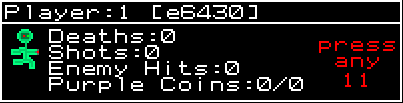
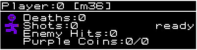

Purple Martians
Technical Code Descriptions
Level Done Procedure
Overview
Variables
Modes
How The Procedure Is Initiated
How The Procedure Progresses
Mode 9 and 8 - Players Seek Exit
Mode 7 - Players Shrink and Rotate into Exit
Mode 5 - Skippable Delay
Mode 2 - Delay to Load Next Level
Mode 1 - Load and start next level
Conclusion and Notes
Overview
A level is completed when any player touches an unlocked exit.
The level is frozen and the end of level stats are shown.
Then after a timeout, or after all players acknowledge, the next level is loaded and started
The server controls the process using the following variables, which are synced to the clients with the rest of the game data.
Variables
These are the variables used in the process:
mPlayer.syn[0].level_done_mode
mPlayer.syn[0].level_done_timer
mPlayer.syn[0].level_done_ack
mPlayer.syn[0].level_done_x
mPlayer.syn[0].level_done_y
mPlayer.syn[0].level_done_player
mPlayer.syn[0].level_done_frame;
mPlayer.syn[0].level_done_next_level
'mode' is the current mode
'timer' controls the length of time before switching to the next mode
'ack' keeps track of which players have acknowledged
'x' and 'y' keep track of the exit position on the level
'player' keeps track of which player touched the exit
'frame' keeps track of the exact frame the level was completed
'next_level' is the next level to load after 'Level Done' is complete
Modes
These are the different modes:
level_done_mode = 9; // set up players seek xinc, yinc and direction
level_done_mode = 8; // all players move to the exit
level_done_mode = 7; // all players rotate and shrink into the exit
level_done_mode = 6; // not used, place holder for future features
level_done_mode = 5; // skippable 15s delay while level end stats show
level_done_mode = 4; // not used, place holder for future features
level_done_mode = 3; // not used, place holder for future features
level_done_mode = 2; // delay to load next level
level_done_mode = 1; // call proc_next_level() to load next level
level_done_mode = 0; // normal game play
How The Procedure Is Initiated
The procedure is initiated by setting 'level_done_mode', when an unlocked exit is touched by any player.
This can only be initiated from mode 0, to prevent re-triggering.
void mwItem::proc_exit_collision(int p, int i)
{
int exit_enemys_left = mEnemy.num_enemy - item[i][8];
if (exit_enemys_left <= 0)
{
if (mPlayer.syn[0].level_done_mode == 0)
{
mPlayer.syn[0].level_done_mode = 9;
mPlayer.syn[0].level_done_timer = 0;
mPlayer.syn[0].level_done_x = itemf[i][0];
mPlayer.syn[0].level_done_y = itemf[i][1];
mPlayer.syn[0].level_done_player = p;
mPlayer.syn[0].level_done_frame = mLoop.frame_num;
if (mLevel.prev_level_loaded == 1) mPlayer.syn[0].level_done_next_level = 1; // if started from overworld, return there
else mPlayer.syn[0].level_done_next_level = mLevel.get_next_level(mLevel.play_level); // otherwise do next chron level
mGameEvent.add(4, 0, 0, 0, 0, 0, 0);
}
}
else mGameEvent.add(23, 0, 0, p, i, exit_enemys_left, 0); // not enough dead yet
}
How The Procedure Progresses
Once the procedure is started, 'level_done_mode' works its way back to 1 where the next level is loaded and finally 0 for normal game_play.
In the main game loop, if 'level_done_mode' is non-zero, 'proc_level_done_mode()' is called.
Otherwise all the objects in the game get moved.
void mwLoop::main_loop(void)
{
....
if (mPlayer.syn[0].level_done_mode) proc_level_done_mode();
else move_frame();
This has the effect of freezing everything when in level done mode.
In 'process_level_done_mode()' the timer is decremented and modes are switched until mode 1 when program_state=12 is set to load the next level.
void mwLoop::proc_level_done_mode(void)
{
...
if (--mPlayer.syn[0].level_done_timer <= 0) // time to change to next level_done_mode
{
mPlayer.syn[0].level_done_mode--;
if (mPlayer.syn[0].level_done_mode == 8) mPlayer.syn[0].level_done_timer = 60; // players seek exit
if (mPlayer.syn[0].level_done_mode == 7) mPlayer.syn[0].level_done_timer = 20; // players shrink and rotate into exit
if (mPlayer.syn[0].level_done_mode == 6) mPlayer.syn[0].level_done_timer = 0;
if (mPlayer.syn[0].level_done_mode == 5) mPlayer.syn[0].level_done_timer = 600; // skippable 15s delay;
if (mPlayer.syn[0].level_done_mode == 4) mPlayer.syn[0].level_done_timer = 0;
if (mPlayer.syn[0].level_done_mode == 3) mPlayer.syn[0].level_done_timer = 0;
if (mPlayer.syn[0].level_done_mode == 2) mPlayer.syn[0].level_done_timer = 10; // delay to load next level
if (mPlayer.syn[0].level_done_mode == 1) mLoop.program_state = 12; // load new level
}
}
Mode 9 and 8 - Players Seek Exit
When the level done procedure starts, the level is frozen and all players move to the exit.
void mwLoop::proc_level_done_mode(void)
{
...
if (mPlayer.syn[0].level_done_mode == 9) // pause players and set up exit xyincs
{
for (int p=0; p< NUM_PLAYERS; p++)
if (mPlayer.syn[p].active)
{
mPlayer.syn[p].paused = 5; // set player paused
// get distance between player and exit
float dx = mPlayer.syn[0].level_done_x - mPlayer.syn[p].x;
float dy = mPlayer.syn[0].level_done_y - mPlayer.syn[p].y;
// get move
mPlayer.syn[p].xinc = dx/60;
mPlayer.syn[p].yinc = dy/60;
// set left right direction
if (mPlayer.syn[p].xinc > 0) mPlayer.syn[p].left_right = 1;
if (mPlayer.syn[p].xinc < 0) mPlayer.syn[p].left_right = 0;
}
}
if (mPlayer.syn[0].level_done_mode == 8) // players seek exit
{
for (int p=0; p< NUM_PLAYERS; p++)
if (mPlayer.syn[p].active)
{
mPlayer.syn[p].x += mPlayer.syn[p].xinc;
mPlayer.syn[p].y += mPlayer.syn[p].yinc;
}
}
Mode 7 - Players Shrink and Rotate into Exit
Then the players shrink and rotate into the exit.
void mwLoop::proc_level_done_mode(void)
{
...
if (mPlayer.syn[0].level_done_mode == 7) // shrink and rotate
{
for (int p=0; p< NUM_PLAYERS; p++)
if (mPlayer.syn[p].active)
{
mPlayer.syn[p].draw_scale -= 0.05;
mPlayer.syn[p].draw_rot -= 8;
}
}
Mode 5 - Skippable Delay
Mode 5 is a special case because it can be skipped if all players acknowledge.
When in level_done_mode, all player input is disabled, except to acknowledge.
Here is the test in 'proc_player_input()' to only allow input in level_done_modes 0 and 5.
void mwPlayer::proc_player_input(void)
{
for (int p=0; p< NUM_PLAYERS; p++)
if (syn[p].active) // cycle all active players
{
if ((syn[0].level_done_mode == 0) || (syn[0].level_done_mode == 5)) // only allow player input in these modes
{
All players inputs are entered into the game_moves array.
However when in level_done_mode 5, the game move entered is modified to be a special 'ack' type game move.
void mwGameMoves::add_game_move(int frame, int type, int data1, int data2)
{
// ----------------------------------------------------------------------------------------
// if we are in level_done_mode 5, all moves are converted to type 8, level done acknowledge
// ----------------------------------------------------------------------------------------
if ((mPlayer.syn[0].level_done_mode == 5) && (type == 5) && (data2)) // all move type inputs are acks in this mode
{
if (!has_player_acknowledged(data1)) // to prevent multiple acks
add_game_move2(frame, 8, data1, 0); // type 8 - acknowledge level done
return; // to exit immediately
}
Then there is a function to check if a specific player has acknowledged:
int mwGameMoves::has_player_acknowledged(int p)
{
int start_pos = entry_pos;
int end_pos = start_pos - 1000;
if (end_pos < 0) end_pos = 0;
for (int x=start_pos; x>end_pos; x--) // look back for ack
if ((arr[x][1] == 8) && (arr[x][2] == p)) return 1;
return 0;
}
And a function to check if all active players have acknowledged:
int mwLoop::have_all_players_acknowledged(void)
{
int ret = 1; // yes by default
for (int p=0; p< NUM_PLAYERS; p++)
{
if (mPlayer.syn[p].active)
{
if (mGameMoves.has_player_acknowledged(p))
{
mPlayer.syn[p].level_done_ack = 1;
}
else
{
mPlayer.syn[p].level_done_ack = 0;
ret = 0;
}
}
}
return ret;
}
In 'process_level_done_mode()' in mode 5, if all players have acknowledged, the timer is set to 0 to immediately skip the delay
This is only done on the server, and then synced back to clients as part of the player struct.
void mwLoop::proc_level_done_mode(void)
{
...
if (mPlayer.syn[0].level_done_mode == 5) // skippable 15s timeout
{
if (!mNetgame.ima_client)
{
if (have_all_players_acknowledged()) mPlayer.syn[0].level_done_timer = 0; // skip
}
}
Also each player is individually checked for acknowledge and the variable 'level_done_ack' is set in the player struct.
This is used to display which players have acknowledged in the level done stats.
void mwScreen::show_player_stat_box(int tx, int y, int p)
{
if (mPlayer.syn[0].level_done_mode == 5)
{
if (!mPlayer.syn[p].level_done_ack)
{
c = mColor.flash_color;
int pay = 16;
al_draw_textf(mFont.pr8, mColor.pc[c], tx+158, y+pay, 0, "press");
al_draw_textf(mFont.pr8, mColor.pc[c], tx+158, y+pay+8, 0, " any");
int tl = mPlayer.syn[0].level_done_timer/40;
if (tl > 9) al_draw_textf(mFont.pr8, mColor.pc[c], tx+154, y+pay+18, 0, " %2d", tl);
else al_draw_textf(mFont.pr8, mColor.pc[c], tx+158, y+pay+18, 0, " %d", tl);
}
else al_draw_textf(mFont.pr8, mColor.pc[15], tx+158, y+20, 0, "ready");
}
If the player has not acknowledged it looks like this with the timer counting down:

If the player has acknowledged it looks like this:

Once all players have acknowledged or timed out we progress to the next level_done_mode.
Mode 2 - Delay to Load Next Level
Now we are done with the delays and end of level statistics and we are ready to load the next level.
(If we got here by touching a warp instead of an exit, all the previous modes will have been skipped.)
The server cannot just immediately load a new level, the clients will be stuck on the old level and timeout.
So we set a timer for 10 frames in the future when the new level loading will take effect.
This is enough time for the data to propagate to the client, so they can load the new level also and follow the server.
void mwLoop::proc_level_done_mode(void)
{
...
if (--mPlayer.syn[0].level_done_timer <= 0) // time to change to next level_done_mode
{
mPlayer.syn[0].level_done_mode--;
if (mPlayer.syn[0].level_done_mode == 8) mPlayer.syn[0].level_done_timer = 60; // players seek exit
if (mPlayer.syn[0].level_done_mode == 7) mPlayer.syn[0].level_done_timer = 20; // players shrink and rotate into exit
if (mPlayer.syn[0].level_done_mode == 6) mPlayer.syn[0].level_done_timer = 0;
if (mPlayer.syn[0].level_done_mode == 5) mPlayer.syn[0].level_done_timer = 600; // skippable 15s delay;
if (mPlayer.syn[0].level_done_mode == 4) mPlayer.syn[0].level_done_timer = 0;
if (mPlayer.syn[0].level_done_mode == 3) mPlayer.syn[0].level_done_timer = 0;
if (mPlayer.syn[0].level_done_mode == 2) mPlayer.syn[0].level_done_timer = 10; // delay to load next level
if (mPlayer.syn[0].level_done_mode == 1) mLoop.program_state = 12; // load new level
}
}
Mode 1 - Load and start next level
In 'program_state == 12' we do all the cleanup, resetting, loading and preparing for the next level.
if (mLoop.program_state == 12)
{
mPlayer.syn[0].level_done_mode = 0;
mLevel.play_level = mPlayer.syn[0].level_done_next_level;
mLevel.load_level(mLevel.play_level, 0, 0);
...
mLoop.program_state = 11;
}
}
Conclusion and Notes
This entire process may seem overly complicated. I have tried to simplify it in as many ways as I can.
I once spent an entire day refactoring the entire procedure. It looked great and was slightly simpler. But it did not work for netgame.
It is very complicated to get this procedure to work with client and server, when either one can rewind and replay frames in order to make multiplayer work.
As I slowly changed pieces of the simpler system, trying to make it work again, it got more complex, until it was essentially the same algorithm.
Only I had lost an entire day chasing bugs, banging my head against the wall, until I realized why I had to do it this way in the first place.
There is one more bit of code.
When the client or server has to rewind and replay frames, the level_done procedure has to be replayed also.
Here is what that looks like:
void mwLoop::loop_frame(int times) // used for fast forwarding after rewind
{
ff_state = 1;
for (int i=0; i< times; i++)
{
mGameMoves.proc();
if (mPlayer.syn[0].level_done_mode) proc_level_done_mode();
else move_frame();
mLoop.frame_num++;
}
ff_state = 0;
}